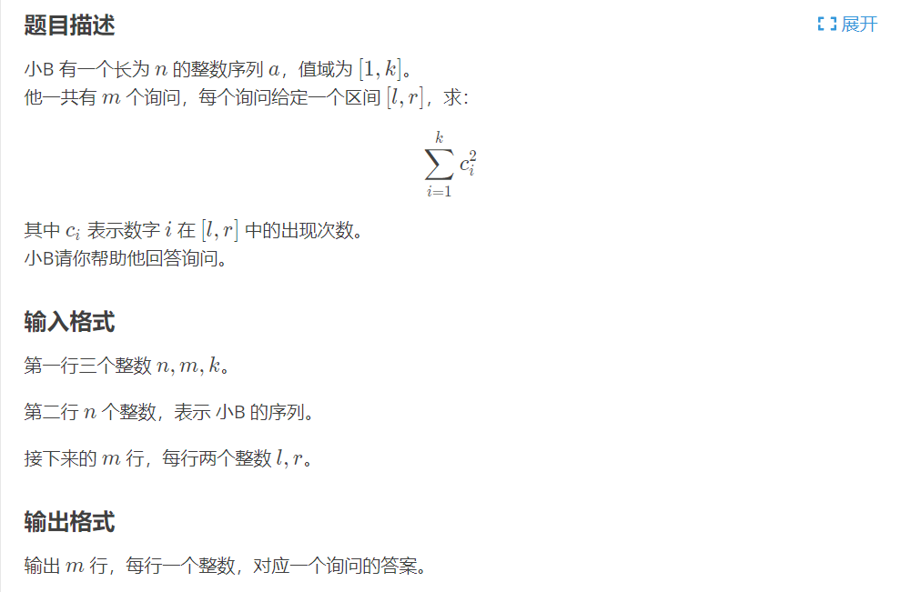

简介
莫队算法是由莫涛发明的，用于处理区间询问的暴力优雅的离线算法，主要基于分块和排序的思想。
问题引入
假设我们要求一个区间[l, r]中含有不同元素的个数，现在已知区间[2, 3]的答案，要求区间[2, 4]的答案，要怎么做呢？我们先开一个cnt[]数组来记录已知答案的区间包含的元素个数，那么求区间[2, 4]时，先将r指针往右移，判断cnt[a[r]]是否为0，为0的话则说明出现了一个新的数字，答案的贡献+1，并且cnt[a[i]]++。所以，对于求任何的区间，我们都可以通过移动左右指针，并且暴力维护区间信息的方式来得到答案。
这个算法非常容易写，这里就不写了，(主要是懒)
很明显这个算法会存在问题，比如题目要求[1, 2]、[n-1, n]、[1, 2]、[n-1, n]……，那么我们的左右指针就会在两个极端反复横跳，那么必定会TLE。这一个暴力还不够的优雅，所以肯定不是莫队算法，但是离莫队算法很近很近了。
优化
对于上面这种情况，加入我们将询问区间变为[1, 2]、[1, 2]、[1, 2]……[n-1, n]、[n-1, n]、[n-1, n]这样，那么将跑的飞快。所以莫队算法就是将所有询问记录下来，然后根据规则对询问区间进行排序，再通过移动左右指针的方式暴力维护答案。所以莫队算法是处理离线问题的，对于在线问题是束手无措。
在线问题就是必须询问一次回答一次，离线问题就是可以先将全部询问记录下来，最后再一起回答。
那么如何对区间进行排序呢？我们先将区间分为sqrt(n)块，有两个区间a和b，如果a.l和b.l在同一个块里，我们就将根据它们的r排序，否则将l所在块号小的排在前面。
莫队
来看看对于上面的问题，代码究竟怎么写吧
1 |
|
莫队算法的整体架构就如上面一样，只是add()和sub()函数的写法需要根据题目要求定制一下，这么一看莫队算法确实是优雅的暴力~
洛谷P2709
来看一道模板题吧

1 | // 样例输入 |
1 |
|
带修改的莫队
有一些带修改的问题也能用莫队来做，只要不是强制在线就行。
带修莫队和普通莫队没有太大的区别，只是需要维护多一个变量time，普通莫队的移动为[l+1, r]、[l-1, r]、[l, r+1]、[l, r-1]，而带修莫队还需要判断当前时间和查询操作的时间的差异，所以带修莫队的移动为[l+1, r, t]、[l-1, r, t]、[l, r+1, t]、[l, r-1, t]、[l, r, t-1]、[l, r, t+1]。
并且将排序规则改为下面的样子
1 | bool cmp(Q a, Q b) { |
块的大小也由sqrt(n)变为pow(n, 2.0 / 3.0)
干说有点不知道在干嘛，还是看个具体的问题吧。
洛谷P1903
1 | // 样例输入 |
1 |
|
带修莫队只是比普通莫队多维护一维而已，写起来也不难。